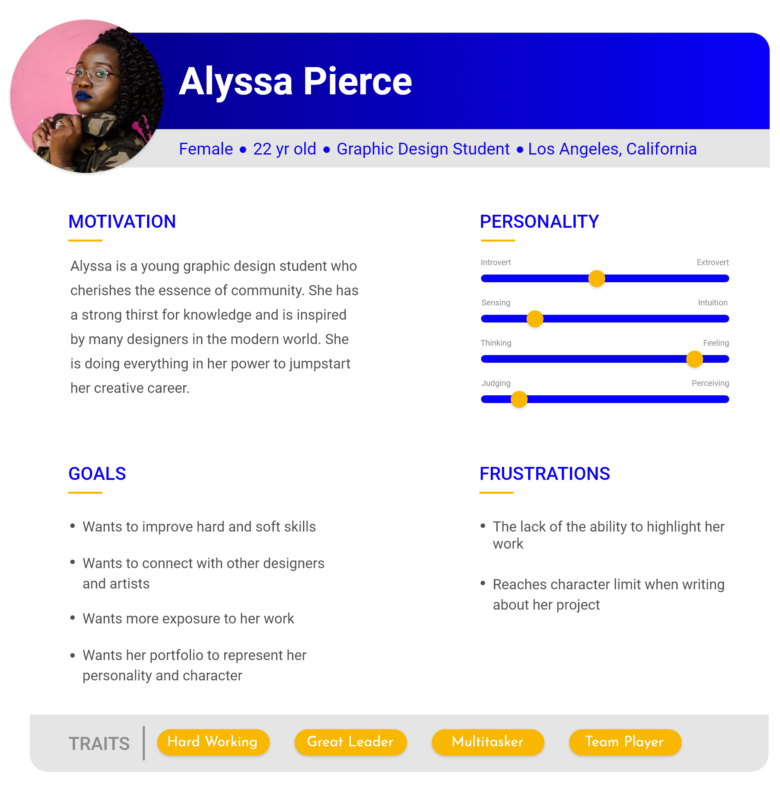
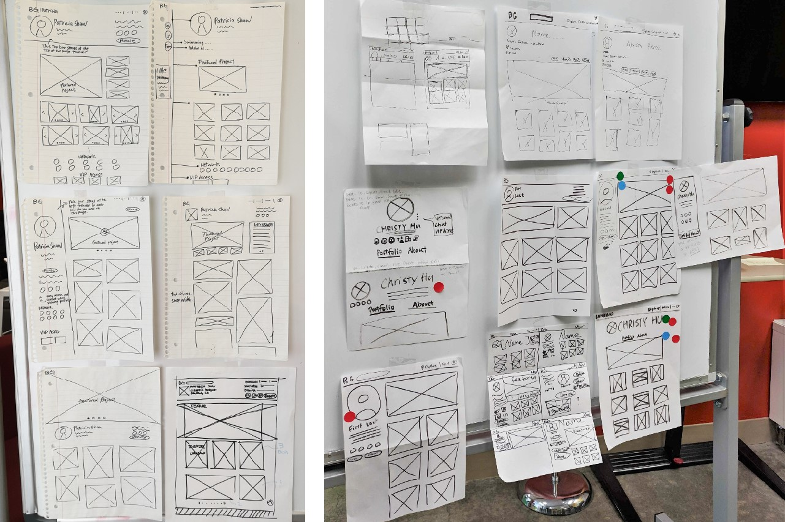

The Process
01.
Research
User Interviews
Competitor Audit
Affinity Mapping
User Journey
User Persona
Problem Statement
02.
Ideation
Whiteboard Sketches
Crazy 8's
Wireframes
Prototypes
03.
Evaluate
Usability Testing
Stakeholder Presentation
My Contribution
Reasearch Phase: I conducted interviews with our users, participated in the competitor audit sessions and presented findings to my team, aided in the creation of the user's journey,
as well as created the final iteration of our product's user persona.
Design Phase: I participated in the sketch brainstorm sessions (Crazy 8's), as one of my selected soluitions were chosen as the direction,
I took charge of implimenting design concepts into wireframes. I then proceeded with prototyping those wireframes and scaled the fidelity from low to high with my team after we confirmed our direction.
Evaluate Phase: I conducted usability test with our team, being that all of our designers were users of this platform.
I then presented this live feature to over 50 stakeholders at the Google.org headquarters.
The Research
User Interviews
My team and I conducted user interviews of the BRIDGEGOOD creatives who use our platform. The most pivotal insights received from our users were:
01.
Lack of a Personal Connection
Users felt that the BRIDGEGOOD branding overpowered the work displayed on the their portfolio page. This made them feel that their work wasn't owned by them.
02.
Monotonus Display
Users were dissatisfied with how the display of their work was being handled. Small square thumbnails were very underwhelming to our users.
In addition, a common theme we saw in our research from user interviews was that users wanted a way to highlight their best project piece.
BRIDGEGOOD did have such feature implimented.
03.
Lack of Opportunity to Tell Their Story
Most of our users would like to tell a story about how they got from point
A to point B in a project. BRIDGEGOOD didn’t have a method to allow users to explain
their process throughout the entire project. Our primary competitors are:
Competitor Audit
We conducted an analysis to see how our competitors
maintain a good retention rate and how they effectively displayed their user’s work.
We weighed the pros and cons of each of their methods to find a solution that best fit our case.
Our primary competitors were:


Researching these companies has enabled our team to understand functioning trends. Looking into Dribble and Behance,
the portfolio website products, some of the key functions that we saw work best were the variations in sizes in regards to the
display of their user's projects. Larger displays seemed to be most popular. As for Squarespace and Adobe Portfolio, the website builder products, we were able to identify
common preferences in regards to style and location of their user's content and images.
User Persona

User's Journey

Defining the Problem
With a series of different team collabortion meetings and all the various data that we have collected,
we began generating ideas as to how exaclt we were going to address this redisgn. We set a foundation for that by conducting an affinity mapping session and created this problem statement that encompassed
the overall theme of our user's needs:

Ideation
Sketches
After our research, we move further into conceptualizing these potential solutions into a visual space. This part of the process was one of the most
important parts of the redesign because this allowed myself and the team to really create in the same space, thus, allowing us all to be on the same page.

Portfolio Page Sketch Session
 Project Display Page Sketches
Project Display Page Sketches
Wireframes
In the proceeding steps of the ideation phase, we scaled our fidelity from
the lowest to the highest fidelity representations of our curated solutions.